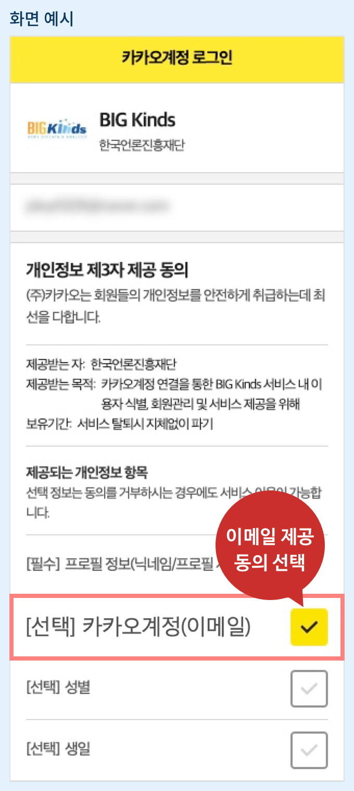
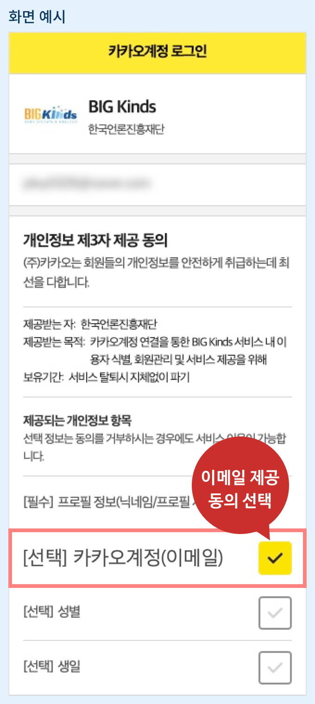

직접입력
언론사 ( 1 / 54)
- 정치
- 행정_자치
- 북한
- 국회_정당
- 외교
- 정치일반
- 선거
- 청와대
- 경제
- 자원
- 부동산
- 금융_재테크
- 경제일반
- 자동차
- 반도체
- 산업_기업
- 무역
- 서비스_쇼핑
- 증권_증시
- 외환
- 취업_창업
- 유통
- 국제경제
- 사회
- 의료_건강
- 환경
- 사건_사고
- 여성
- 장애인
- 날씨
- 노동_복지
- 사회일반
- 미디어
- 교육_시험
- 문화
- 영화
- 문화일반
- 미술_건축
- 음악
- 방송_연예
- 학술_문화재
- 종교
- 요리_여행
- 생활
- 전시_공연
- 출판
- 국제
- 러시아
- 일본
- 국제일반
- 중동_아프리카
- 유럽_EU
- 미국
- 중남미
- 중국
- 아시아
- 지역
- 충남
- 대전
- 경남
- 제주
- 대구
- 경기
- 지역일반
- 울산
- 광주
- 강원
- 전북
- 충북
- 부산
- 경북
- 전남
- 스포츠
- 야구
- 한국프로야구
- 메이저리그
- 일본프로야구
- 스포츠일반
- 축구
- 해외축구
- 국가대표팀
- 한국프로축구
- 올림픽_아시안게임
- 농구_배구
- 골프
- 월드컵
- IT_과학
- 인터넷_SNS
- 과학
- 콘텐츠
- 모바일
- IT_과학일반
- 보안
- 범죄
- 성범죄
- 성폭행
- 성추행
- 성희롱
- 성매매
- 음란물
- 기업범죄
- 내부자거래
- 거래제한
- 반독점범죄
- 계약위반
- 횡령
- 정치
- 뇌물수수
- 범죄일반
- 방화
- 폭행
- 절도
- 유괴/납치
- 살인
- 사기
- 마약
- 사고
- 산업사고
- 붕괴
- 폭발
- 화재
- 원자력사고
- 교통사고
- 항공사고
- 우주사고
- 해상사고
- 철도사고
- 노상사고
- 재해
- 자연재해
- 눈사태_산사태
- 태풍
- 폭염
- 해일
- 화산폭발
- 가뭄
- 지진
- 홍수
- 사회
- 사회문제
- 학대
- 중독
- 미성년범죄
- 노예
- 자살
- 사회갈등
- 전쟁
- 테러행위
- 시위
- 반란_혁명_폭동
- 대량학살
상세검색으로 더 정확한 검색 결과를 얻을 수 있습니다. 인용문 검색시 바이그램검색만 가능합니다.
- 매체
- 방송
- ARD-NDR
- BBC
- G1강원민방
- GBS
- JTV 전주방송
- KBC광주방송
- KNN
- PBC광주평화방송
- SBS Plus
- SBSfunE
- SBSMTV
- TJB 대전방송
- TRENDY
- TVB
- 강원CBS
- 국군방송
- 국악방송
- 국회방송
- 글로보TV
- 디스커버리채널
- 북한조선중앙TV
- 서울경제TV
- 스카이스포츠
- 스포티비게임즈
- 아리랑TV
- 아사히TV
- 알아라비야
- 엔에이치케이
- 웨딩TV
- 자유아시아방송
- 중국중앙방송
- 청주CBS
- 코미디TV
- 한국정책방송
- 경제채널
- SBSCNBC
- 교육방송
- EBS교육방송
- 뉴스채널
- CNN
- ytn
- 연합뉴스TV
- 라디오방송
- MBC표준FM
- SBSFM
- SBS라디오
- 광주 국악방송
- 교통방송
- 스포츠채널
- CBS스포츠
- KBSN스포츠
- MBC스포츠플러스
- MBC스포츠플러스2
- SBSSPORTS
- SPOTV플러스
- 음악채널
- Mnet
- SBS MTV
- 인터넷방송
- DBS동아방송
- MBNGold
- 곰TV
- 아프리카TV
- 자유북한방송
- 종교방송
- BBS
- CBS 기독교방송
- 종합편성채널
- JTBC
- MBN
- TV조선
- 채널A
- 지상파
- KBS 광주방송총국
- KBS 목포방송국
- KBS 전주방송국
- KBS 춘천방송국
- KBS1TV
- KBS2TV
- SBS TV
- 광주MBC
- 목포MBC
- 울산MBC
- 원주MBC
- 전주MBC
- 춘천MBC
- 포항MBC
- 푸드채널
- 올리브 TV
- 홈쇼핑
- 신세계TV쇼핑
- 신문
- 기관지
- 노동신문
- 인민일보
- 중국청년보
- 스포츠신문
- 산케이스포츠
- 스포츠동아
- 스포츠서울
- 스포츠월드
- 스포츠투데이
- 일간스포츠
- 어린이신문
- 소년한국일보
- 온라인신문
- 광주로
- 인터넷사이트
- 한국아이닷컴
- 경제
- 금융
- 마켓워치
- 인터파크컨소시엄
- 부동산
- 네이버부동산
- 서울부동산정보광장
- 시장조사
- 랭키닷컴
- 재벌정보
- 재벌닷컴
- 주식
- 한국경제TV와우넷
- 증권
- 크레온
- 프리스탁
- 클라우드펀딩
- 펀딩21
- 가격비교
- 에누리닷컴
- 공연티켓
- 인터파크티켓
- 교육
- 공신닷컴
- 아이러브스쿨
- 국가자격시험
- 큐넷
- 구인구직
- 잡코리아
- 기업
- 도서
- 인터넷교보문고
- 인터파크도서
- 보험
- 롯데하우머치다이렉트
- 철도회사
- 레츠코레일누리집
- 인터파크도서북DB
- 가전제품
- 삼성디지털
- 미디어
- 어플리케이션
- 네이버앱스토어
- 음란물
- 소라넷
- 음악
- 가온차트
- 몽키3
- 애플뮤직
- 동영상
- YouTube
- 네이버티비캐스트
- 아이치이
- 사회
- 직장평가
- 글래스도어
- 토론커뮤니티
- 아고라
- 일베
- 비리고발
- 위키리크스
- 스포츠
- 축구정보
- 골닷컴
- 후스코어닷컴
- 신문사
- 뉴스투데이
- 문화닷컴
- 브레이트바트뉴스
- 한경닷컴
- 여행
- 일본정부관광국
- 시티투어
- 나주시티투어
- 인터넷쇼핑몰
- 더현대닷컴
- 인터파크홀딩스
- 타오바오
- 축산물품질평가원
- 축산유통종합정보센터
- 커뮤니티 웹사이트
- 위즈돔
- 메갈리아
- 티켓
- 인터파크투어
- 페이스북
- 한경닷컴뉴스랩
- 포털사이트
- 소후닷컴
- 야후재팬
- 종합지
- LA타임스
- 강원도민일보
- 강원일보
- 경기신문
- 경기일보
- 경남도민일보
- 경남신문
- 경북매일신문
- 경상일보
- 경인일보
- 광주일보
- 국민일보
- 금강일보
- 남도일보
- 뉴욕데일리뉴스
- 뉴욕포스트
- 대전일보
- 데일리노컷뉴스
- 데일리메일
- 데일리텔레그래프
- 도쿄신문
- 동양일보
- 디모인레지스터
- 리베라시옹
- 매일신문
- 무등일보
- 보스턴글로브
- 서울신문
- 세계일보
- 스포르트
- 시드니모닝헤럴드
- 시카고트리뷴
- 아사히 신문
- 아시아투데이
- 엘파이스
- 영남일보
- 울산매일신문
- 인디펜던트
- 인천일보
- 전남일보
- 전북일보
- 전자신문
- 제주일보
- 조선일보
- 중도일보
- 중부일보
- 중앙일보
- 쥐트도이체차이퉁
- 충청일보
- 충청투데이
- 코리아중앙데일리
- 코리아헤럴드
- 타임스오브인디아
- 트리뷘 드 즈네브
- 피츠버그포스트가제트
- 하레츠
- 휴리에트
- 힌두스탄타임스
- 무료신문
- 메트로신문
- 주간지
- 네이비타임스
- 샤를리 에브도
- 타임지
- 법령
- 국가 공무원법
- 국가기술자격법
- 국가를 당사자로 하는 계약에 관한 법률
- 국가배상법
- 국가보안법
- 국가보훈기본법
- 국가인권위원회법
- 국가정보원법
- 국민건강보험법
- 국민건강증진법
- 국민기초생활보장법
- 국민체육진흥법
- 국어기본법
- 국유재산특례제한법
- 국정교과서 금지법
- 국제보건규칙
- 국제의료사업지원법
- 국제인권법
- 국회 선진화법
- 국회법
- 군공항 이전 및 지원에 관한 특별법
- 군사기밀보호법
- 군사기지 및 군사시설 보호법
- 규제개혁특별법
- 규제프리존법
- 근로기준법
- 금융소비자보호법
- 금융실명거래 및 비밀보장에 관한 법률
- 기간제 및 단시간근로자 보호 등에 관한 법률
- 기술사법
- 기업구조조정촉진법
- 기업활력제고법
- 기초연금법
- 김영란법
- 난민법
- 남북협력기금법
- 농약관리법
- 농업협동조합법
- 농촌사회공헌인증제
- 담배사업법
- 대규모유통업에서의 거래 공정화에 관한 법률
- 대부업 등의 등록 및 금융이용자 보호에 관한 법률
- 대외무역법
- 대중소기업 상생협력 촉진법
- 대통령기록물 관리에 관한 법률
- 대학구조개혁법
- 대한민국임시헌장
- 대한민국헌법
- 도로교통법
- 도로명주소법
- 도로운송차량법
- 도시개발법
- 도시계획법
- 도시공원 및 녹지 등에 관한 법률
- 도시및주거환경정비법
- 도청이전특별법
- 독서문화진흥법
- 독점규제 및 공정거래에 관한 법률
- 2018평창동계올림픽대회 및 동계패럴림픽대회 지원 등에 관한 특별법
- 동물보호법
- 드론법
- 디자인보호법
- 로마법
- 마약류관리에관한법률
- 먹는물관리법
- 모자보건법
- 무역법
- 문학진흥법
- 문화기본법
- 문화재보호법
- 미국 민권법
- 미국 대북제재법
- 민법
- 민사소송법
- 민생경제법
- 밀항단속법
- 반공법
- 반독점법
- 방문판매 등에 관한 법률
- 방송법
- 법원조직법
- 변리사법
- 변호사법
- 변호사시험법
- 병역법
- 보조금 관리에 관한 법률
- 보증인보호특별법
- 보험법
- 보험사기방지특별법
- 복면착용금지법
- 부가가치세법
- 부담금관리기본법
- 부동산명의신탁금지법
- 부패방지법
- 북한인권법
- 비정규직 고용안정법
- 빈집 및 주택정비특례법
- 사립학교교직원 연금법
- 사립학교법
- 사면법
- 사이버테러방지법
- 사회보장기본법
- 사회적 경제기본 법안
- 산림보호법
- 산업기술혁신 촉진법
- 산업안전보건법
- 산업재해보상보험법
- 산업집적활성화 및 공장설립에 관한 법률
- 상가건물임대차보호법
- 상속세 및 증여세법
- 상표법
- 상호저축은행법
- 상훈법
- 새마을금고법
- 새만금사업 추진 및 지원에 관한 특별법
- 생명윤리기본법
- 서비스산업발전법
- 서울시 공무원 행동강령
- 석면안전관리법
- 선거관리위원회법
- 선박안전법
- 성매매 특별법
- 성폭력범죄의 처벌 등에 관한 특례법
- 세림이법
- 소득세법
- 소방기본법
- 소비자기본법
- 소음·진동관리법
- 송유관안전관리법
- 수난구호법
- 수도권 정비계획법
- 수도법
- 수산업법
- 수산업협동조합법
- 수산자원관리법
- 수상레저안전법
- 수의사법
- 스포츠산업진흥법
- 시설물의 안전관리에 관한 특별법
- 신용정보의 이용 및 보호에 관한 법률
- 신용협동조합법
- 신해철법
- 아동복지법
- 아동청소년의 성보호에 관한 법률
- 아동학대범죄의 처벌 등에 관한 특례법
- 악취방지법
- 암 관리법
- 양곡관리법
- 양성평등기본법
- 언론중재 및 피해구제 등에 관한 법률
- 업무 카톡 금지법
- 여권법
- 여신전문금융업법
- 연명의료법
- 연방법
- 영유아보육법
- 옥외광고물 등의 관리와 옥외광고산업 진흥에 관한 법률
- 외국인투자촉진법
- 외국환거래법
- 외환관리법
- 울릉도독도 지원 특별법
- 원샷법
- 원자력안전법
- 웰다잉법
- 위험물안전관리법
- 유선 및 도선사업법
- 유아교육법
- 유아교육법시행령
- 유통산업발전법
- 이자제한법
- 인성교육진흥법
- 인신보호법
- 일본 안보법
- 일본 집단자위권법
- 일본국 헌법
- 입양특례법
- 자격기본법
- 자동차 관리법
- 자동차손해배상보장법
- 자동차운수사업법
- 자연공원법
- 자유무역협정 기금법
- 재난 및 안전관리기본법
- 재벌특혜법
- 저출산 고령사회기본법
- 저탄소 녹색성장 기본법
- 전공의특별법
- 전기용품안전관리법
- 전기통신기본법
- 전기통신사업법
- 전원개발촉진법
- 전자상거래법
- 전파법
- 정당법
- 정보통신망 이용촉진 및 정보보호 등에 관한 법률
- 정치자금법
- 제조물책임법
- 제품안전기본법
- 조세범처벌법
- 조세법
- 조세특례제한법
- 주거기본법
- 주민소환에 관한 법률
- 주민투표법
- 주세법
- 주식회사의 외부감사에 관한 법률
- 주차장법
- 주택임대차보호법
- 주한미군 공여구역주변지역 등 지원 특별법
- 죽은 채권 부활금지법
- 중소기업기본법
- 중소기업제품 구매촉진 및 판로지원에 관한 법률
- 중소기업협동조합법
- 중증장애인생산품 우선구매 특별법
- 쥐약법
- 증권거래법
- 증권관련 집단소송법
- 지방공무원법
- 지방교부세법
- 지방교육자치에관한법률
- 지방교육재정교부금법
- 지방세기본법
- 지방자치단체를 당사자로 하는 계약에 관한 법률
- 지방자치법
- 지방재정법
- 진로교육법
- 진로교육법 시행령
- 차별금지법
- 처벌에 관한 법률
- 철도건설법
- 철도안전법
- 첨복단지 특별법
- 청년고용촉진특별법
- 청년기본법
- 청소년기본법
- 청소년복지지원법
- 청소년활동진흥법
- 초중등교육법
- 총기규제법
- 출신학교차별금지법
- 출입국관리법
- 치료감호 등에 관한 법률
- 치안유지법
- 클라우드컴퓨팅 발전 및 이용자 보호에 관한 법률
- 탄소소재의 융복합 기술개발 및 기반조성 지원에 관한 법률
- 태완이법
- 택지개발촉진법
- 테러방지법
- 토지보상법
- 통합방송법
- 특별감찰관제
- 특정범죄가중처벌법
- 특정비밀보호법
- 파견근로자 보호 등에 관한 법률
- 평생법관평생검사제
- 폐광지역 개발 지원에 관한 특별법
- 폭력행위처벌법
- 표시.광고의 공정화에 관한 법률
- 품질경영 및 공산품안전관리법
- 하도급거래 공정화에 관한 법률
- 학교급식법
- 학교도서관진흥법
- 학교체육진흥법
- 한국교육방송공사법
- 한국산업은행법
- 한국은행법
- 한국주택금융공사법
- 한일청구권협정
- 할부거래에 관한 법률
- 항공보안법
- 항만법
- 해사안전법
- 해양법에 관한 국제연합 협약
- 해양환경관리법
- 해외부패방지법
- 해외이주법
- 행정규제기본법
- 행정사법
- 행정중심복합도시 건설을 위한 특별법
- 협동조합기본법
- 형법
- 형사소송법
- 형의 집행 및 수용자의 처우에 관한 법률 시행령
- 형제복지원 특별법
- 화장품법
- 화학물질관리법
- 화학물질의 등록 및 평가 등에 관한 법률
- 환경보전법
- 환자안전법
- 집회 및 시위에 관한 법률
- 416세월호참사 진상규명 및 안전사회 건설 등을 위한 특별법
- 518민주화운동 등에 관한 특별법
- 가습기살균제특별법
- 가정폭력방지 및 피해자보호 등에 관한 법률
- 가축전염병예방법
- 감사원법
- 강사법
- 개인정보보호법
- 개정국회법
- 건강검진기본법
- 건강보험개혁법
- 건설기술진흥법
- 건축법
- 건축사법
- 검역법
- 게임산업진흥에 관한 법률
- 경범죄 처벌법
- 경비업법
- 경제법
- 경제자유구역의 지정 및 운영에 관한 특별법
- 경찰관직무집행법
- 경찰법
- 계량에 관한 법률
- 고등교육법
- 고용안정법
- 공공기관운영에관한법률
- 공교육 정상화 촉진 및 선행교육 규제에 관한 특별법
- 공동주택관리법
- 공무원 범죄에 관한 몰수 특례법
- 공무원연금법
- 공무원인재개발법
- 공연법
- 공예문화산업 진흥법
- 공유수면관리법
- 공유토지분할 특례법
- 공익신고자보호법
- 공익인권법
- 공인중개사법
- 공인회계사법
- 공정거래법
- 공중위생관리법
- 축산물위생관리법
- 공중화장실 등에 관한 법률
- 공직선거법
- 공직자윤리법
- 과학기술기본법
- 과학기술인공제회법
- 관세 정책
- 관세감면제도
- 관피아방지법
- 교원의 노동조합 설립 및 운영 등에 관한 법률
- 교원지위향상을 위한 특별법
- 교육공무원법
- 교육기본법
- 교통사고처리특례법
- 교통약자의 이동편의 증진법
- 경제지
- WSJ
- 매경
- 서울경제신문
- 아시아경제
- 아주경제
- 파이낸셜타임스
- 한국경제신문
- 인스타그램
- 서울경제썸
- CBS노컷뉴스
- 스포츠서울닷컴
- 인터넷신문
- 데일리NK
- 데일리뉴스
- 잡지
- US위클리
- 노동시간센터
- 디오션
- 무등일보 아트플러스
- 미국골프다이제스트
- 올리브매거진 코리아
- 캠퍼스 씨네21
- 포린 어페어스
- 포천지
- 동아비즈니스리뷰
- 서울경제포춘코리아
- 포브스
- 포브스아시아
- 계간지
- 시조21
- 골프지
- 골프다이제스트
- 과학잡지
- 네이처
- 과학지
- 과학동아
- 사이언스지
- 사이언티픽리포츠
- 파퓰러 사이언스
- 플로스원
- 군사지
- 디펜스21플러스
- 남성지
- GQ
- 생활지
- 메종
- 스포츠지
- 서울경제골프매거진
- 시사지
- 슈테른
- 여성지
- 우먼센스
- 여행잡지
- 트래비
- 영화지
- 씨네21
- 육아잡지
- 키즈맘
- 의학저널
- BMJ
- 미국의학협회저널
- 자동차저널
- 그린카저널
- 패션지
- VOGUE
- 그라치아
- 더블유 코리아
- 마리끌레르
- 바자르
- 엘르
- 코스모폴리탄
- 학술지
- 네이처커뮤니케이션스
- 네이처화학생물학
- 보건복지포럼
- 화보
- 옴므플러스
- 조약
- CITES
- EPA
- EU조약
- FATCA
- SOFA협정
- UNFCCC
- 강화도조약
- 공정거래협약
- 국제거래에관한협약
- 군사비밀정보보호협정
- 금융정보자동교환협정
- 더블린조약
- 람사르협약
- 리스본조약
- 무역협정
- 미일안보조약
- 미평화협정
- 방산군수협정
- 솅겐조약
- 수호통상조약
- 양자투자협정
- 원자력협정
- 유엔아동권리협약
- 유엔해양법협약
- 을사조약
- 인권조약
- 인도조약
- 정보기술협정
- 제네바협약
- 조미수호통상조약
- 조세조약
- 특허협력조약
- 파리 기후변화협약
- 평화협정
- 포괄적경제동반자협정
- 한미상호방위조약
- 한미주둔군지위협정
- 한불수호조약
- 한인도 조세조약
- 한일군사정보보호협정
- 한일기본조약
- 한일병합
- 한일협정
- 해운협정
- 핵실험금지조약
- 핵확산금지조약
- 확산금지조약
- 환태평양동반자협정
- FTA
- EU자유무역협정
- 북미자유무역협정
- 유럽연합 FTA
- 자유무역협정
- 한EU자유무역협정
- 한국베트남자유무역협정
- 한뉴질랜드 FTA
- 한멕시코FTA
- 한미자유무역협정
- 한영FTA
- 한중자유무역협정
- 한미원자력협정
직접 구성하여 저장된 나의 검색식을 활용해 검색합니다.